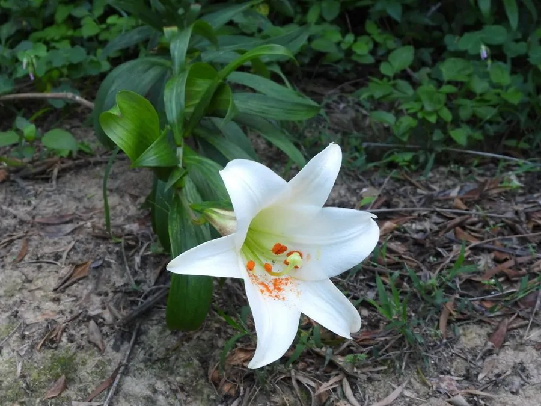

花卉与草本 · 植物界
百合 Lilium brownii

百合科百合属的多年生草本，花大而洁白、香气浓郁，鳞茎可食用和药用，常被赋予“百年好合”的美好寓意。
- 分类
- 门被子植物门纲木兰纲目百合目科百合科属百合属
- 栖息环境
- 山坡林下、溪边草丛及石缝，喜凉爽湿润、半阴的环境
- 地理分布
- 中国华北、华东、华中至西南山地，湖南龙山、江西万载等地大量种植
- 保护级别
- 暂无评估
物种志
百合为百合科百合属多年生草本，株高 60–120 厘米，地下具扁球形鳞茎，由多数肉质鳞片抱合而成。茎直立，叶散生，呈披针形至椭圆状披针形。花顶生或排成总状花序，喇叭形，长 10–20 厘米，花被片 6 枚，白色或带淡黄，香气浓郁，花期 5–7 月，果期 8–9 月，蒴果长圆形。
百合原产中国，分布于河北、山西、陕西、河南、湖北、湖南、江西、浙江、四川、云南等地，多生于山坡林下、溪边草丛。它喜凉爽湿润和半阴环境，忌烈日暴晒与积水，可用鳞茎分球、鳞片扦插或播种繁殖。鳞茎富含淀粉与多糖，可煮食、制成百合干，入药有润肺止咳之效；花可作切花，是婚礼和节庆常用的吉祥花卉，湖南龙山、江西万载等地把食用百合作为特色农产品种植。
形态与习性
- 株高60–120 厘米
- 花期5–7 月，单花开放约 7–10 天
- 果期8–9 月，蒴果长圆形
- 光照喜半阴，忌强光直射
- 水分喜湿润，忌积水烂鳞茎
- 土壤疏松、肥沃、排水良好的微酸性土壤
- 繁殖鳞茎分球、鳞片扦插或播种
- 食用药用鳞茎制百合干，可润肺止咳
趣味知识
- 百合的鳞茎由层层肉质鳞片抱合而成，“百合”之名即取“百片合抱”之意。
- 百合花被片 6 枚排成两轮，纯白色的大花往往香气最浓。
- 猫对百合科植物极其敏感，误食花粉或叶片可导致急性肾衰竭。
- 湖南龙山、江西万载等地把食用百合作为特色农产品种植。